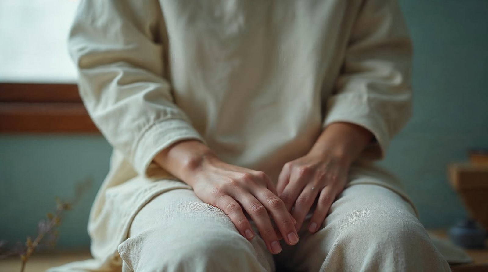
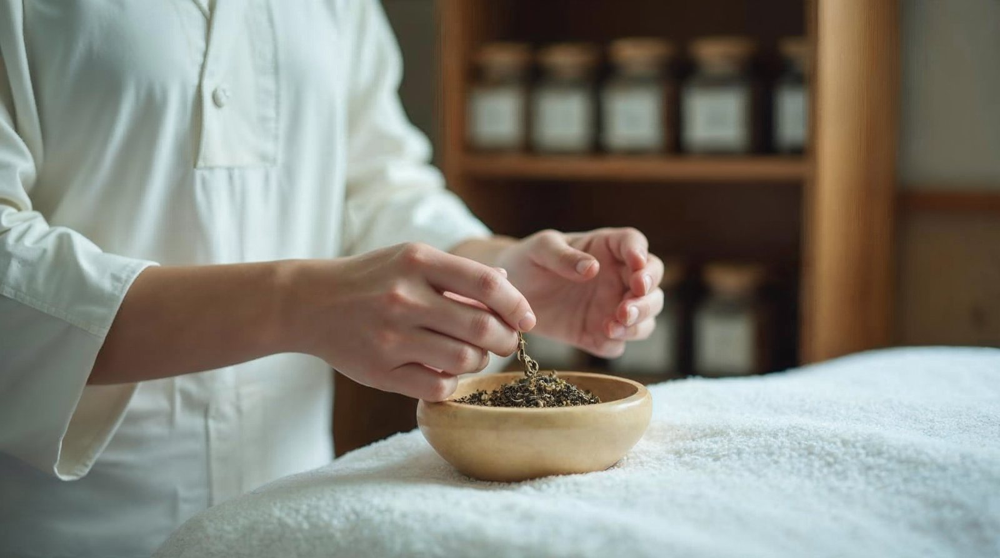
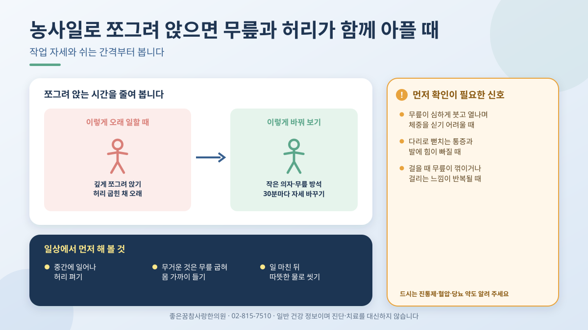

이종호 한의사 감수좋은꿈참사랑한의원 대표원장 (한의사 면허번호 19769)발행 2026-11-23 · 수정 2026-11-26
이 글의 차례
- 왜 이런 불편이 생길 수 있나요
- 먼저 이렇게 여쭙니다
- 일상에서 먼저 해 볼 수 있는 것
- 상황별 예시
- 스스로 점검해 보세요
- 허리에서 오는 불편과 무릎에서 오는 불편은 어떻게 구분하나요?
- 왜 해마다 같은 철에 반복될까요
- 농사철이 오기 전에 몸을 미리 준비해 보세요
- 작업 날짜와 몸 상태를 달력에 함께 적어 보세요
- 한의원에서는 어떤 치료를 어떻게 정하나요?
- 밭에서 쉬는 시간, 이렇게 보내 보세요
- 도구와 밭 환경을 바꿔 볼 수 있을까요?
- 일을 마친 날 저녁에는 무엇을 챙길까요?
- 한의원에서 함께 살필 수 있는 경우
- 얼마나 지켜보고 언제 상담할까요
- 이렇게 기록해 오시면 상담이 쉬워집니다
- 이런 증상은 먼저 확인이 필요합니다
- 관련 글
밭일 뒤 허리와 무릎이 함께 아프다면, 며칠은 쪼그려 앉는 시간을 줄이고 일어설 때 허리와 무릎 중 어디가 먼저 불편한지부터 살펴보는 것이 좋습니다. 김을 매고 모종을 심고 수확하는 동안 허리는 굽히고 무릎은 접힌 채로 오래 머물게 됩니다.
주말농장이나 옥상 텃밭처럼 가끔 몰아서 하는 일일수록 다음 날 몸이 한 번에 펴지지 않는 경험을 하기 쉽습니다. 작업 자세와 쉬는 간격을 조금 바꾸면 부담을 덜 수 있습니다.
이른 아침 고랑을 따라 쪼그려 앉아 있다 보면 시간 가는 줄 모르지요. 진료실에서 그런 이야기를 들으면, 몸이 아픈 줄 알면서도 작물이 기다리니 손을 놓기 어려우셨겠다 싶습니다.
왜 이런 불편이 생길 수 있나요
- 쪼그려 앉은 자세에서는 무릎이 깊게 접혀 무릎 앞쪽과 관절에 부담이 큽니다.
- 허리를 굽힌 채 오래 일하면 허리 뒤 근육이 계속 버텨야 해서 일어설 때 뻣뻣해지기 쉽습니다.
- 평소 잘 쓰지 않던 근육을 한꺼번에 쓰면 다음 날 뻐근함이 몰려올 수 있습니다.
- 흙이나 물이 든 통처럼 무거운 것을 허리를 굽혀 들면 순간적인 부담이 커집니다.
- 고랑과 두둑처럼 바닥이 고르지 않은 곳에서는 한쪽 다리와 골반에 체중이 실리기 쉽고, 이른 아침 찬 공기 속에서는 몸이 덜 풀린 채 힘을 쓰게 됩니다.
먼저 이렇게 여쭙니다
- 한 번에 몇 시간쯤 같은 자세로 일하시나요?
- 일어설 때 허리가 먼저 불편한가요, 무릎이 먼저인가요?
- 작은 의자나 받침을 쓰시나요?
- 무릎이 붓거나 시린 느낌도 있나요?
- 엉덩이나 다리 쪽으로 당기거나 저린 느낌이 있나요?
- 일을 쉬는 철에는 어느 정도 가라앉나요?
일상에서 먼저 해 볼 수 있는 것
일을 시작하기 전 5분
- 밭 둘레를 가볍게 걷고, 허리에 손을 얹어 골반을 천천히 둥글게 돌리기를 좌우 5번씩 합니다.
- 울타리나 의자를 잡고 무릎을 반쯤만 굽혔다 펴기를 10번 해 무릎과 허벅지를 데웁니다.
일하는 동안
- 작은 의자나 엉덩이에 붙이는 작업 방석을 써서 쪼그려 앉는 시간을 줄입니다.
- 무릎을 꿇어야 할 때는 무릎 방석을 깔고, 쪼그려 앉기·무릎 꿇기·서서 일하기를 번갈아 섞어 한 자세가 30분을 넘지 않게 합니다.
- 김매기처럼 바닥 가까이 하는 일은 자루가 긴 도구를 써서 서서 할 수 있는 만큼 서서 합니다.
- 무거운 것은 무릎을 굽혀 몸 가까이 들고, 물통은 반만 채워 두 번에 나르거나 손수레를 씁니다.
30분~1시간마다 2분
- 일어나서 양손을 허리 뒤에 대고 허리를 천천히 살짝 젖혔다 돌아오기를 5번 합니다. 오래 숙인 허리를 반대로 펴 주는 동작이며, 아프면 멈춥니다.
- 그늘에서 물을 마시고 다리를 가볍게 털며 몇 걸음 걷습니다.
일을 마친 뒤
- 바로 누워 무릎 아래에 베개를 받치고 5분쯤 숨을 고릅니다.
- 다음 날 아침에는 옆으로 돌아누운 뒤 팔로 짚고 천천히 일어납니다.

상황별 예시
- 예를 들어 평일에는 사무실에 앉아 일하고 주말에만 주말농장에 가는 직장인이 하루 서너 시간 몰아서 김을 맨 뒤 월요일 아침 허리가 바로 펴지지 않는다면, 다음에는 두 시간씩 이틀로 나누고 30분마다 일어나 허리를 펴는 것부터 해 봅니다.
- 예를 들어 옥상 텃밭을 가꾸는 어르신이 흙 포대와 화분을 옮긴 다음 날 무릎이 시큰하다면, 흙 포대는 손수레로 옮기고 화분을 받침대 위에 올려 쪼그려 앉지 않고 서서 돌볼 수 있는 높이로 바꿔 봅니다.
- 예를 들어 수확 철에 며칠 내리 밭일을 돕는 가족이 무릎이 붓고 계단을 내려갈 때 시큰하다면, 붓기와 열감부터 확인하고 쪼그려 앉는 일은 잠시 다른 일로 바꿔 봅니다.
스스로 점검해 보세요
- 한 자세로 1시간 넘게 쪼그려 앉아 일하는 때가 많다.
- 일어설 때 무언가를 짚어야 일어날 수 있다.
- 일한 다음 날 아침 허리가 바로 펴지지 않는다.
- 계단을 내려갈 때 무릎 앞쪽이 시큰하다.
- 무릎이 반대쪽보다 부어 보이거나 따뜻하게 느껴진다.
- 엉덩이나 다리 뒤쪽으로 당기거나 저린 느낌이 있다.
- 일하는 날에는 끼니와 물을 거르기 쉽다.
허리에서 오는 불편과 무릎에서 오는 불편은 어떻게 구분하나요?
밭일 뒤 허리와 무릎이 함께 아프면 어디가 먼저인지 헷갈리기 쉽습니다. 둘은 서로 영향을 주기도 해서, 처음에는 아픈 순서와 느낌을 자세히 여쭙습니다.
- 허리 쪽 불편: 숙였다 펼 때 허리 가운데나 양옆이 뻣뻣하고, 아침에 가장 굳어 있다가 움직이며 조금씩 풀립니다.
- 무릎 앞쪽 불편: 쪼그려 앉았다 일어설 때나 계단을 내려갈 때 무릎뼈 주변이 시큰합니다.
- 무릎 안쪽 불편: 고르지 않은 고랑을 오래 걸은 날 무릎 안쪽이 콕 집어 아프고, 오래 앉았다 일어설 때 더해지기도 합니다.
- 허리에서 다리로 내려가는 당김: 허리를 숙이면 엉덩이나 허벅지 뒤로 저림이 내려오고, 무릎까지 이어지는 듯 느껴지기도 합니다.
무릎이 아프다고 하셨는데 실제로는 허리에서 내려오는 신호인 경우도, 그 반대인 경우도 있습니다. 그래서 허리와 무릎을 따로 보지 않고 앉았다 일어서는 한 동작 안에서 함께 살핍니다.
왜 해마다 같은 철에 반복될까요
농사일은 철에 따라 몰립니다. 겨우내 쉬던 몸이 봄 파종과 모종 심기에 한꺼번에 쓰이고, 가을 수확 철에 다시 며칠씩 이어서 쪼그려 앉게 됩니다. 몸이 준비되기 전에 큰일을 맡는 셈이라 같은 시기에 같은 곳이 아프기 쉽습니다.
쉬는 철에 걷는 양이 줄면 허벅지와 엉덩이 근육이 약해집니다. 다리 힘이 부족하면 무릎이 더 많은 부담을 떠안고, 허리도 그만큼 숙여 일하게 됩니다.
한의학에서는 찬 기운과 습한 기운이 몸에 머물면 관절이 무겁고 뻣뻣해지기 쉽다고 봅니다. 이른 봄의 찬 땅이나 비가 잦은 철에 더 무겁다는 분이 있는 것도 이 관점으로 살펴 왔습니다. 다만 전통적인 관점이라 현대 연구로 확인된 내용과는 구분해서 말씀드립니다.
농사철이 오기 전에 몸을 미리 준비해 보세요
일이 시작되기 3~4주 전부터 조금씩 몸을 쓰는 연습을 해 두면, 첫 주의 뻐근함을 줄이는 데 보탬이 될 수 있습니다.
- 하루 20~30분 걷기를 꾸준히 합니다. 평지에서 시작해 조금씩 언덕길을 섞습니다.
- 튼튼한 의자에 앉았다가 손을 쓰지 않고 일어나기를 10번, 하루 두 번 해 허벅지 힘을 기릅니다. 무릎이 아프면 의자 높이를 올립니다.
- 벽을 짚고 뒤꿈치를 들었다 내리기를 15번 해 종아리를 깨웁니다.
- 바로 누워 엉덩이를 천천히 들었다 내리기를 10번 하며 엉덩이와 허리 근육을 함께 씁니다.
모든 동작은 아프지 않은 범위에서 합니다. 준비하는 동안 무릎이 붓거나 시큰함이 커진다면 횟수를 줄이고 상담해 보세요.
저는 복지관에서 어르신들께 이야기할 때도, 일주일에 한 번 세게 하는 것보다 자주 약하게 하는 편이 오래간다고 말씀드립니다. 힘이 있는 날에만 하지 말고, 힘이 없는 날에는 힘이 없는 만큼만 하셔도 됩니다.
작업 날짜와 몸 상태를 달력에 함께 적어 보세요
집에 있는 달력이나 휴대폰 메모에 그날 한 일과 시간을 적고, 다음 날 아침 허리와 무릎 상태를 0~10점으로 붙여 둡니다. '고추 모종 3시간, 다음 날 허리 6·무릎 4'처럼 짧게 쓰면 됩니다.
한 철이 지나면 어떤 일을 몇 시간 한 뒤 몸이 힘들었는지가 달력에 남습니다. 이 기록은 다음 해에 일을 나눠 계획하는 데도 쓸 수 있습니다.
한의원에서는 어떤 치료를 어떻게 정하나요?
허리와 엉덩이 근육이 굳어 있다면 침이나 약침을, 허리와 골반의 균형이 흐트러져 있다면 추나를, 몸이 차고 무릎이 시리다면 온열 물리치료를 함께 고려합니다. 무릎 주변 힘줄 쪽 불편이 오래 이어지면 체외충격파를 상의하기도 합니다.
저는 잘 먹고, 잘 싸고, 잘 자고, 마음 편하고, 몸 따뜻하게, 이 다섯 가지를 몸이 회복하는 바탕으로 봅니다. 새벽부터 밭에 나가 끼니를 거르고 땀이 식어 몸이 차가워지는 날이 이어지면 이 바탕이 흔들리기 쉬워, 허리와 무릎을 보러 오신 분께도 식사와 잠, 몸의 온기를 함께 여쭙습니다.
몸이 무겁고 쉬어도 개운하지 않은 날이 길다면 한약을 함께 이야기하기도 합니다. 이때는 혈압·당뇨 약처럼 지금 드시는 약을 먼저 확인합니다.
밭에서 쉬는 시간, 이렇게 보내 보세요
쉬는 시간에 그 자리에 쪼그려 앉아 쉬면 무릎은 계속 접혀 있게 됩니다. 작은 의자나 방석에 엉덩이를 대고 다리를 앞으로 뻗어 쉬어 보세요.
따뜻한 물이나 차를 챙겨 가 한두 모금씩 마시고, 땀이 식으면 겉옷을 걸칩니다. 땀이 식으며 몸이 차가워지면 다시 일할 때 허리가 더 뻣뻣하게 느껴지기 쉽습니다.
도구와 밭 환경을 바꿔 볼 수 있을까요?
- 호미나 낫처럼 짧은 도구 대신 자루가 긴 괭이나 긴 손잡이 모종삽을 쓰면 서서 할 수 있는 일이 늘어납니다.
- 자주 돌보는 작물은 허리 높이의 상자 텃밭이나 받침대 위에 두면 쪼그려 앉는 시간이 줄어듭니다.
- 고랑 사이가 좁으면 몸을 비틀며 일하게 되니, 다음 철에는 고랑 폭을 조금 넓혀 봅니다.
- 물을 길어 나르는 거리가 멀다면 호스를 연결하거나 물통을 작은 것으로 바꿉니다.
한꺼번에 다 바꾸기는 어렵습니다. 몸이 가장 힘들었던 일 하나를 골라 도구나 높이부터 바꿔 보시고, 다음 날 아침 몸 상태를 비교해 보세요.
일을 마친 날 저녁에는 무엇을 챙길까요?
밭에서 돌아와 바로 바닥에 앉아 쉬면 무릎과 허리가 다시 접힌 채로 머물게 됩니다. 저녁에는 등받이가 있는 의자에 앉고, 따뜻한 물로 씻은 뒤 다리를 쭉 펴고 쉬어 보세요.
늦은 저녁을 과하게 먹기보다 가볍게 먹고 일찍 잠자리에 드는 편이 다음 날 몸을 일으키는 데 보탬이 될 수 있습니다. 다음 날 집 안에서 천천히 걷다가 무릎이 시큰해지면 잠시 앉아 다리를 편 채 쉬었다가 다시 걸어 보세요.

한의원에서 함께 살필 수 있는 경우
- 일을 마치고 일어설 때 허리와 무릎이 뻣뻣하게 굳는 경우 작업 자세와 근육의 긴장을 함께 살핍니다.
- 무릎이 붓거나 시린 느낌이 함께 있는 경우 생활 습관과 하루의 움직임을 함께 살핍니다.
- 몸이 무거워 쉬어도 개운하지 않은 경우 잠과 식사, 피로를 함께 살핍니다.
좋은꿈참사랑한의원에 오시면 모든 분의 맥을 먼저 짚고, 어떤 일을 몇 시간 하셨는지, 언제부터 어떤 동작에서 아픈지, 일어설 때 허리와 무릎 중 어디가 먼저 불편한지를 여쭙습니다. 잠과 식사, 몸이 차고 무거운지도 함께 듣습니다.
이어서 허리를 숙이고 펴는 움직임과 앉았다 일어서는 동작, 무릎을 굽히고 펴는 범위, 다리 힘과 저림을 직접 확인하고, 무릎이 붓거나 힘줄 쪽 불편이 의심되면 필요하다고 판단될 때 초음파로 무릎 주변을 살핍니다.
귀가 전에는 밭일을 언제부터 어느 정도로 다시 할지, 한 번에 일할 시간과 쉬는 간격을 함께 정합니다. 토·일·공휴일에도 오전 9시 30분부터 오후 3시까지 점심시간 없이 진료하며, 원장별 일정은 방문 전 전화로 확인해 주세요.
얼마나 지켜보고 언제 상담할까요
- 쪼그려 앉는 시간을 줄이고 쉬는 간격을 지키며 며칠 지나는 동안 일어서는 동작이 조금씩 편해진다면, 그 방법을 이어 가며 지켜볼 수 있습니다.
- 일주일이 지나도 아침마다 허리가 바로 펴지지 않거나, 2주가 지나도 계단에서 무릎의 같은 자리가 시큰하면 상담을 받아 보세요.
- 무릎이 부었다 가라앉기를 되풀이하거나 엉덩이·다리로 당기는 느낌이 새로 생기면 미루지 말고 확인합니다.
이렇게 기록해 오시면 상담이 쉬워집니다
- 한 번에 일하는 시간과 쉬는 간격
- 일어설 때 허리와 무릎 중 먼저 불편한 곳
- 무릎이 붓는 날과 그 전날 한 일
- 다른 병원에서 받은 무릎·허리 영상 판독지
- 복용 중인 진통제나 혈압·당뇨 약
다음에 오시면 어떤 일을 몇 시간 하셨는지, 달력에 적힌 날 가운데 어느 날이 가장 힘드셨는지부터 여쭙겠습니다. 올해 농사도 몸을 아껴 가며 끝까지 거두시길 바랍니다.
이런 증상은 먼저 확인이 필요합니다
- 다리나 발에 힘이 빠지거나, 대소변 조절이 어렵거나, 엉덩이·사타구니(안장 부위) 감각이 둔해진 경우
- 무릎이 갑자기 크게 붓고 뜨거워지거나, 넘어진 뒤 체중을 싣기 어려운 경우
이런 신호가 있으면 한의원보다 가까운 병원이나 응급실을 먼저 찾으세요.
관련 글
- 김장 때 바닥에 쪼그려 앉아 일한 뒤 허리와 무릎이 아프면 어떻게 살피나요?
- 계단을 내려갈 때 무릎이 아프면 한의원에서는 무엇을 먼저 묻나요?
- 무릎에 물이 찼을 때 초음파로는 무엇을 확인할 수 있나요?

여쭙는 것
- 한 번에 몇 시간쯤 같은 자세로 일하시나요?
- 일어설 때 허리가 먼저 불편한가요, 무릎이 먼저인가요?
- 작은 의자나 받침을 쓰시나요?
생활에서 해 볼 것
- 밭 둘레를 가볍게 걷고, 허리에 손을 얹어 골반을 천천히 둥글게 돌리기를 좌우 5번…
- 울타리나 의자를 잡고 무릎을 반쯤만 굽혔다 펴기를 10번 해 무릎과 허벅지를 데웁니다.
- 작은 의자나 엉덩이에 붙이는 작업 방석을 써서 쪼그려 앉는 시간을 줄입니다.
한의원에서 함께 살필 것
- 일을 마치고 일어설 때 허리와 무릎이 뻣뻣하게 굳는 경우 작업 자세와 근육의 긴장을…
- 무릎이 붓거나 시린 느낌이 함께 있는 경우 생활 습관과 하루의 움직임을 함께 살핍니다.
- 몸이 무거워 쉬어도 개운하지 않은 경우 잠과 식사, 피로를 함께 살핍니다.
먼저 확인이 필요한 신호
- 다리나 발에 힘이 빠지거나, 대소변 조절이 어렵거나, 엉덩이·사타구니(안장 부위)…
- 무릎이 갑자기 크게 붓고 뜨거워지거나, 넘어진 뒤 체중을 싣기 어려운 경우
한눈에 보는 표
| 구분 | 핵심 |
|---|---|
| 여쭙는 것 | 한 번에 몇 시간쯤 같은 자세로 일하시나요? 일어설 때 허리가 먼저 불편한가요, 무릎이 먼저인가요? |
| 생활에서 해 볼 것 | 밭 둘레를 가볍게 걷고, 허리에 손을 얹어 골반을 천천히 둥글게 돌리기를 좌우 5번씩 합니다. 울타리나 의자를 잡고 무릎을 반쯤만 굽혔다 펴기를 10번 해 무릎과 허벅지를 데웁니다. |
| 한의원에서 함께 살필 것 | 일을 마치고 일어설 때 허리와 무릎이 뻣뻣하게 굳는 경우 작업 자세와 근육의 긴장을 함께 살핍니다. 무릎이 붓거나 시린 느낌이 함께 있는 경우 생활 습관과 하루의 움직임을 함께 살핍니다. |
| 먼저 확인이 필요한 신호 | 다리나 발에 힘이 빠지거나, 대소변 조절이 어렵거나, 엉덩이·사타구니(안장 부위) 감각이 둔해진 경우 무릎이 갑자기 크게 붓고 뜨거워지거나, 넘어진 뒤 체중을 싣기 어려운 경우 |
자주 묻는 질문
쪼그려 앉는 일은 무릎에 늘 나쁜가요?
짧게 하는 것은 괜찮지만 오래 반복하면 부담이 쌓일 수 있어 받침을 쓰고 자세를 바꿔 가며 일하길 권합니다.
일하는 철에는 어쩔 수 없이 아픈가요?
쉬는 간격과 작업 방식을 조금 바꾸면 부담을 줄이는 데 도움이 되는 경우가 있습니다. 농사철 몇 주 전부터 몸을 미리 준비해 두는 것도 방법입니다.
무릎 보호대를 차고 밭일을 해도 되나요?
불안할 때 잠깐 도움이 될 수 있지만, 하루 종일 차는 것은 상담 뒤 정하시길 권합니다.
일한 다음 날 허리가 뻣뻣하면 누워서 쉬어야 하나요?
누워만 있기보다 아프지 않은 범위에서 천천히 걷고 허리를 가볍게 움직이는 편이 굳은 몸을 푸는 데 도움이 될 수 있습니다. 통증이 점점 심해지면 상담해 보세요.
좋은꿈참사랑한의원은 재진 때 지난번 이야기부터 이어서 여쭙니다. 진료시간과 예약은 오시는 길에서 확인하세요.
어디서 상담받을 수 있나요?
좋은꿈참사랑한의원은 서울 동작구 만양로2길 2 신성빌딩 3층·5층(서울 동작구 상도동, 7호선 상도역 3번 출구 근처)에 있습니다. 한의사 3명(이종호 대표원장, 조영기 수석진료원장, 정원영 진료원장)이 진료합니다. 진료시간은 평일 09:30~20:00(점심 13:00~14:00), 토·일·공휴일 09:30~15:00이며, 방문 전 전화로 확인을 권합니다. 예약은 네이버 예약, 카카오톡 상담, 전화 02-815-7510로 받습니다.
이 글은 일반적인 건강 정보이며 개인의 진단이나 치료를 대신하지 않습니다. 증상이 있거나 복용 중인 약이 있다면 진료를 통해 확인하세요. 치료 효과는 개인마다 다를 수 있습니다.
작성 기준: 일반적으로 알려져 있는 건강 정보를 참고해 정리했습니다(대표원장 감수). 증상 기록은 1~2주 동안 하루 1회, 비슷한 시간에 적어 오시면 지난 상태와 비교하기 쉽습니다.